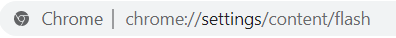
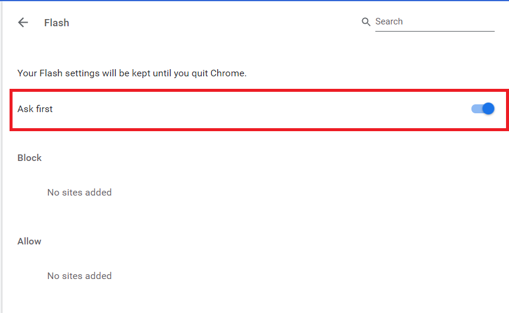
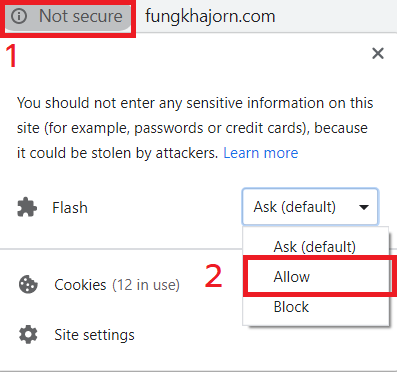

ขั้นตอนที่ 1 ให้เปิดแท็ปหน้าเว็บใหม่แล้วนำลิ้งค์นี้ไปวาง chrome://settings/content/flash ดังภาพด้านล่าง

ขั้นตอนที่ 2 ให้เราติ๊กดังภาพด้านล่าง แล้วให้ปิดหน้านี้ไปเลย

ขั้นตอนที่ 3 ให้เราคลิ๊กเลือกดังภาพตรงหมายเลข 1 เมื่อคลิ๊กตรงหมายเลข 1 เสร็จ ตรงหมายเลข 2 ให้เราเลือก Allow

ขั้นตอนที่ 4 ให้เรา รีเฟรช หน้าเว็บ 1 ครั้ง